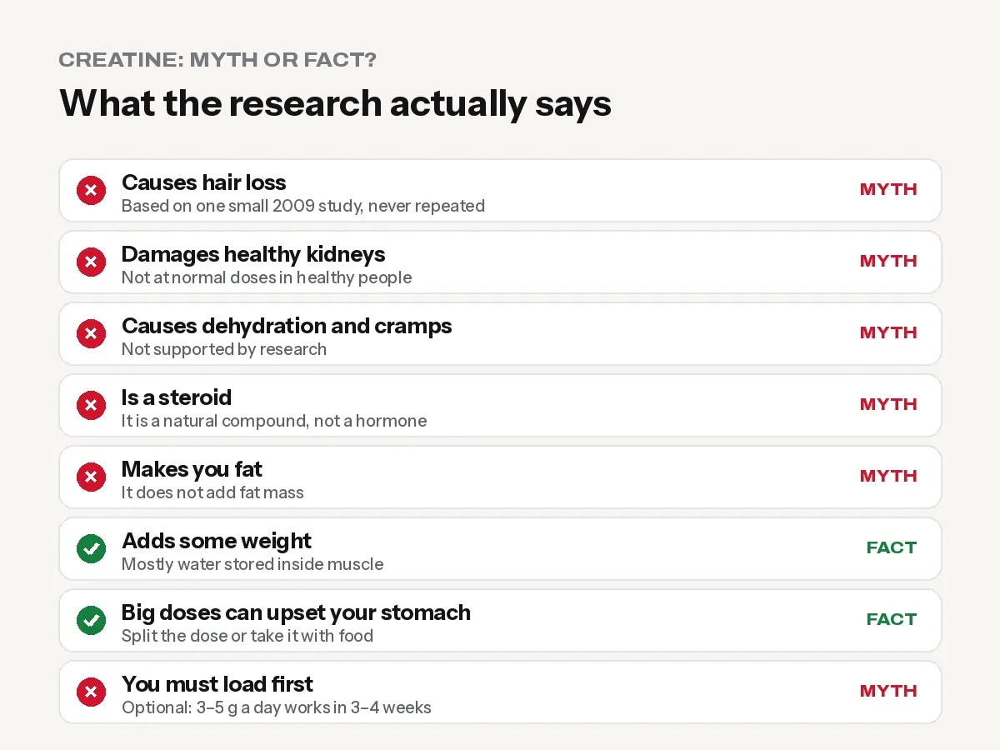

Creatine Side Effects: What Is True and What Is a Myth
Does creatine cause hair loss, kidney damage or bloating? What the research really says about creatine side effects, safe dose, and who should avoid it.

For healthy adults, creatine monohydrate at 3 to 5 grams a day is one of the most researched and safest supplements available. The most common “side effects” people worry about, such as hair loss, kidney damage, dehydration and cramps, are not supported by the research. The real side effects are small: a little weight gain from water in the muscles, and an upset stomach if you take a big dose at once.
At the gym we hear the same fears every week, usually from a friend or a relative. Here is what the science actually says, myth by myth.
The main source for this article is a 2021 review by a group of creatine researchers in the Journal of the International Society of Sports Nutrition: “Common questions and misconceptions about creatine supplementation”, which looked at hundreds of studies.
Quick answer table
| Claim | True or myth? |
|---|---|
| Creatine causes hair loss | Mostly myth. Based on one small 2009 study that has never been repeated |
| Creatine damages kidneys | Myth for healthy people at normal doses |
| Creatine causes dehydration and cramps | Myth |
| Creatine is a steroid | Myth |
| Creatine makes you fat | Myth. It does not increase fat mass |
| Creatine causes some weight gain | True. Mostly water stored inside muscle |
| Big doses can upset your stomach | True. Split the dose or take it with food |
| You must do a loading phase | Myth. Optional, not required |

Myth 1: “Creatine causes hair loss”
This fear comes from one study in 2009 on a small group of college rugby players. Their levels of DHT (a hormone linked to hair loss in some men) went up during creatine use. The study did not measure any hair loss, and according to the 2021 review, its results have never been replicated. Other studies found no rise in DHT.
The review’s conclusion: the majority of available evidence does not support a link between creatine and hair loss or baldness.
If male pattern baldness runs strongly in your family and you are worried, it is reasonable to speak to a doctor. But for most people, this myth should not stop them.
Myth 2: “Creatine damages your kidneys”
The kidney fear started with a single case report in 1998 about a man who already had kidney disease. Since then, many controlled studies in healthy people have found no kidney damage at recommended doses.
There is one thing that confuses doctors and patients: creatine can raise creatinine in a blood test. Creatinine is used to estimate kidney function, so a higher number can look like a kidney problem when it is really just extra creatine being broken down.
Tip: If you have a blood test, tell your doctor you take creatine. And if you already have kidney disease, diabetes or high blood pressure, ask your doctor before taking any supplement.
Myth 3: “Creatine dehydrates you and causes cramps”
Research does not show that creatine causes dehydration or muscle cramps. Some studies even suggest fewer cramps in athletes using it. Drink normal amounts of water through the day, as you should when training anyway.
Myth 4: “Creatine is a steroid”
No. Creatine is a natural compound made in your body from amino acids and found in meat and fish. It has nothing in common with anabolic steroids, and it is allowed in every major sport.
Myth 5: “Creatine makes you fat”
Creatine does not increase fat mass. The weight you may gain at the start is mostly water stored inside your muscles, which is part of how creatine helps you train harder. Over months of training, extra weight is more likely to be muscle.
What is true: the real side effects
Small weight gain at the start
Many people gain around 1 to 2 kg in the first week or two, especially if they do a loading phase. This is water inside the muscle, not fat or bloating under the skin. If you are in a weight-category sport, plan around it.
Upset stomach with big doses
Taking a large amount in one go (for example 10 g or more at once) can cause stomach discomfort or loose motions in some people. Fix: take 3 to 5 g at a time, with food or a drink.
How to take creatine safely
- Choose plain creatine monohydrate. The review found that other “special” forms are not better than monohydrate, which is also the cheapest.
- Take 3 to 5 g every day. Timing does not matter much. Pick a time you will remember.
- Loading is optional. Some people take about 20 g a day (split into four 5 g doses) for 5 to 7 days to fill muscles faster. Without loading, 3 to 5 g a day reaches the same level in about 3 to 4 weeks.
- Take it on rest days too.
- Buy genuine products. A fake tub can contain anything. See our guide on how to spot fake supplements in Nepal.
Who should talk to a doctor first
- Anyone with kidney or liver disease
- People with diabetes or on regular medicines
- Pregnant or breastfeeding women
- Under 18s: research suggests creatine is generally safe for adolescents, but young athletes should use it only with a parent’s and doctor’s guidance, and focus on food, sleep and training first
Frequently asked questions
Is creatine safe to take every day?
Yes, for healthy adults. Studies have used creatine daily for months to years at normal doses without harmful effects.
Does creatine cause hair fall?
The idea comes from one 2009 study that measured a hormone, not hair, and has never been repeated. Most evidence does not link creatine to hair loss.
Can creatine damage my kidneys?
Not in healthy people at recommended doses, according to many controlled studies. It can raise creatinine on a blood test, so tell your doctor you take it.
Should I stop creatine after some months (cycling)?
There is no need to cycle creatine. You can take it continuously. If you stop, your muscle creatine slowly returns to normal over a few weeks.
Can women take creatine?
Yes. The 2021 review concluded creatine provides a range of benefits for women across their lifespan. It does not make women bulky.
Which creatine is best in Nepal?
Plain creatine monohydrate from a genuine source. Price per gram is a fair way to compare. See our creatine price in Nepal guide.
Sources
- Common questions and misconceptions about creatine supplementation (Antonio et al., JISSN, 2021)
- ISSN position stand: safety and efficacy of creatine supplementation (Kreider et al., 2017)
General information, not medical advice. Checked on 23 October 2026.
General information, not medical advice. Ask a doctor if you have a health condition. Results vary from person to person.